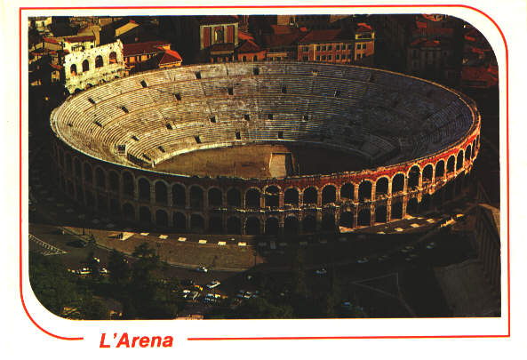
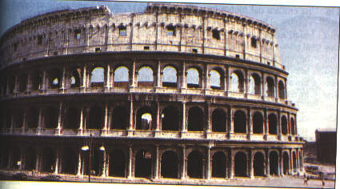

SPETTACOLI
Gli spettacoli più significativi costruiti
dai romani, si svolgevano nell'Anfiteatro di Rimini, nell'Arena di Verona
e nel Colosseo di Roma.
L'ARENA DI
VERONA
L'arena di Verona è
uno dei più grandi del mondo romano e può contenere circa 25000
spettatori, lungo le sue 44 file di gradini.
La sua struttura,
a blocchi di marmo rosa, e ad agglomerati di selce e di mattoni, ci fa intuire
che la costruzione dell' arena sia avvenuta alla fine del 1° sec.
Qui vi si tengono ogni estate prestigiose rappresentazioni
liriche.
L' ARENA

IL COLOSSEO DI ROMA
Questo anfiteatro è anche chiamato Flavio, dal nome del primo imperatore
della famiglia Flavia (Vespasiano) che ne fece iniziare la costruzione.
Fu edificato sul luogo del laghetto
prosciugato della Domus Aurea,
nella valle tra il Palatino, il Celio e l'Esquilino.
La costruzione, iniziata nel 72 d.C. da Vespasiano, fu completata
e inaugurata da Tito nell'80 d.C.; Domiziano vi aggiunse l'ultimo ordine
di gradinate.
Venne soprannominato Colosseo forse per la vicinanza del Colosso di
Nerone, statua bronzea di oltre 35 metri di altezza, o forse per le dimensioni
colossali dell'edificio stesso (527 metri di circonferenza e 57 metri di
altezza).
Le mensole sostenevano le basi dei pali che, infilati nei fori praticati
nella cornice superiore, permettevano di sostenere un
velario in lino, destinato a proteggere gli
spettatori dal sole e dalla pioggia.
Poteva contenere più di
50000 persone.
Vi
si svolgevano combattimenti fra uomini ed animali, duelli fra gladiatori,
gare e neumachie.
Gli scavi hanno portato alla luce le quinte, situate
sotto l'arena, da cui uscivano gli animali feroci.
IL COLOSSEO DI ROMA

Torna all'indice